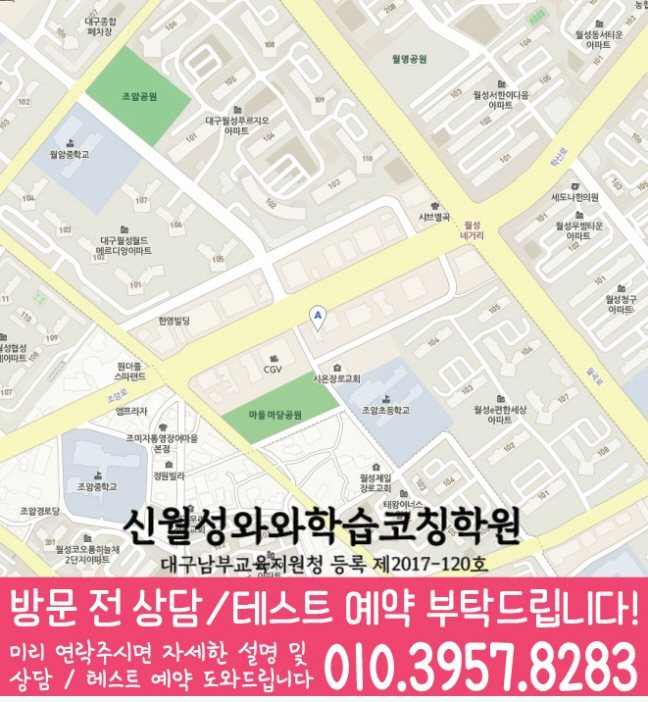

Middle school Korean · English · Math
월성동 중학생 국영수학원
월성동 중학생 국영수학원 선택 전 중등 내신 자료, 최근 오답과 과목별 가능 학년, 센터 위치·비용 확인 기준을 안내합니다.
01 Quick answer
월성동에서 먼저 확인할 내용
월성동에서 중학생 국영수학원을 찾는다면 와와학습코칭센터 신월성점의 과목별 가능 학년을 먼저 확인하세요. 제공된 중학교 참고 자료와 학생의 실제 교재를 대조하고, 학생의 실제 풀이 기록에 맞게 현재 자료에서 확인한 문제를 수업, 복습과 재점검으로 연결하는지 살펴봐야 합니다.
대표 학생 상황
성적표보다 공부 습관을 먼저 바꿔야 하는 방학 복습이 필요한 학생


010-6839-8283상담 전 핵심 안내
대구광역시 달서구 월성동 학부모가 월성동 중학생 국영수학원을 비교할 때는 막연한 설명보다 자녀가 지금 막히는 지점, 학교 진도, 주간 학습 기록을 함께 보는지가 중요합니다. 학년이 올라갈수록 국어·영어·수학의 부족한 단원이 서로 영향을 주기 때문에 월성동 중학생에게는 과목별 기록과 주간 점검이 같이 필요합니다. 월성동 상담 전에는 수업 방향, 학교 진도와 학년별 확인 항목을 차례로 정리하세요.
중학생 국영수 학년별 질문 리스트
대구광역시 달서구 월성동 중2 시험 준비는 현재 범위와 더불어 세 과목에서 이어지는 기초 단원의 빈틈을 확인하는 과정이 필요합니다. 월성동 중3 학생은 고등 과정 선행 여부보다 중학교 국영수 내신에서 틀린 단원을 정리하고, 질문 기록과 연결된 학습 기록을 남기는 일이 먼저입니다. 월성동 학부모가 학년과 시험 일정에 맞춰 질문을 나누면 필요한 수업 밀도와 복습량을 구체화할 수 있습니다. 월성동 중1 학생은 자유학기 또는 학교 적응 과정에서 공부 습관이 느슨해지기 쉬우므로 월성동 국어·영어·수학 학습 계획 상담에서 과목별 기본 루틴을 먼저 점검하면 좋습니다.
월성동 중학생 국영수 선택 기준
질문 기록을 상담 주제로 함께 확인하면 월성동 학생의 수업 참여, 과제 흐름, 복습 주기를 생활 리듬에 맞춰 판단하기가 수월합니다. 월성동 중학생의 최근 자료에서 약점을 찾고 다음 주 과제와 복습으로 이어지는지 살펴보세요. 과목을 함께 관리해도 월성동 학생의 현재 단원과 재점검 날짜는 따로 정해야 합니다. 월성동 중학생 상담에서는 가정에서 가능한 공부 시간을 실제 자료에서 확인해 이번 주에 바꿀 행동을 한 가지 정합니다.
월성동 중학교 참고 자료를 상담에 활용하는 기준
학교 일정까지 함께 보면, 제공된 중학교 참고 목록은 조암중·월암중·월서중·효성중·영남중·대건중·학산중입니다. 다음 계획을 정하기 전에, 이 목록은 수업 가능 여부를 보장하지 않으며, 상담에서 학생이 가져온 실제 학교 자료를 대조하기 위한 정보입니다.
상담 전에 정리해 보면, 월성동 학생이 사용하는 시험 범위표·학교 프린트·수행평가 일정 자료를 가져오면 국어·영어·수학의 현재 단원과 준비 일정을 구체적으로 확인할 수 있습니다. 센터 안내와 비교할 때, 자료가 수업 진도와 재확인 날짜에 반영되는지도 물어보세요.
수업 이후 관리가 흔들리지 않게 보는 방법
월성동 중학생의 국어·영어·수학 학습 점검 상담에서는 출결, 과제 제출, 보충 여부, 질문 기록처럼 학부모가 집에서 확인하기 어려운 항목을 어떤 방식으로 공유하는지 물어보면 좋습니다. 비슷한 공부 습관을 가진 학생이라면 수업 직후의 이해도보다 일주일 뒤 같은 유형을 다시 풀 수 있는지가 더 중요하므로 대구광역시 달서구 월성동 학부모는 관리 기록의 주기를 살펴야 합니다. 위치 확인에 사용할 주소는 대구 달서구 월성동 1848번지 그루타워 702호입니다. 중학생의 경우 학교 일정과 교통 시간을 반영해 무리 없는 등원 시각인지 살펴보세요. 질문 기록은 단순한 부가 정보가 아니라 월성동 중학생이 수업을 빠지지 않고 따라갈 수 있는지 판단하는 운영 기준이 될 수 있습니다.
점수보다 먼저 봐야 할 국영수 학습 증거
대구광역시 달서구 월성동 중등 과제는 새 문제와 함께 이미 틀린 유형을 다시 설명하고 적용하는 내용을 담아야 합니다. 질문 기록을 함께 확인하는 월성동 중학생 세 과목 학습 상담에서는 학습 결과뿐 아니라 출결, 과제, 보충, 질문 흐름을 함께 남기는지 살피는 것이 좋습니다. 이 학생을 위한 진단은 점수 한 줄보다 “왜 틀렸는가, 다시 풀면 어디서 멈추는가, 다음 과제에 어떻게 반영되는가”를 기록하는 방식이어야 합니다. 월성동에서 중등 국영수 상담에서는 오답 기록이 과목별 원인과 다음 행동으로 나뉘는지 확인하세요.
02 Consultation examples
월성동 학부모 상담 상황 예시
아래 내용은 실제 고객 후기나 성적 결과가 아니라, 상담에서 확인할 질문을 이해하기 위한 상황 예시입니다.
월성동 학부모가 자녀의 세 과목 학습량이 서로 충돌하는 문제를 질문한 상황을 예로 들었습니다. 상담 후에는 성적 약속보다 과목별 최소 복습량, 집중 단원과 재확인 날짜가 구체적인지 살펴봅니다.
월성동에서 제공된 중학교 참고 정보인 조암중·월암중·월서중 등의 목록과 학생의 실제 학교 자료를 대조해 질문하는 장면을 예로 들었습니다. 실제 등록 판단 전에는 주소와 통학 시간, 센터별 운영 범위, 학교 시험 자료의 반영 방식을 차례로 확인합니다.
03 FAQ
월성동 중학생 국영수학원 자주 묻는 질문
학부모님이 상담 전에 자주 확인하는 내용을 질문과 답변으로 정리했습니다.
월성동 중학생 국영수학원 상담에서 첫 번째로 확인하는 내용은 무엇인가요?
국어·영어·수학마다 막히는 원인이 다른데 같은 방식으로 공부한다면 최근 자료를 과목별로 분류하고 보완 행동과 확인 날짜를 따로 정해야 합니다.
월성동 중학생이 국어·영어·수학을 함께 관리할 때 무엇을 구분해야 하나요?
월성동 상담에서는 먼저 최근 자료에서 가장 시급한 과목을 찾고, 나머지 과목의 최소 복습 시간을 남겨야 합니다. 오답은 설명 직후가 아니라 일정 시간이 지난 뒤 다시 풀어 적용 여부를 확인합니다.
월성동 중학교 참고 정보는 상담에서 어떻게 활용하나요?
학교명은 상담 준비를 위한 참고 정보입니다. 조암중·월암중·월서중·효성중 등과 관련한 실제 수업 여부는 학생의 시험 범위표·학교 프린트·수행평가 일정 자료, 센터의 현재 개설 범위와 함께 확인해야 합니다.
월성동 상담 전에 센터 위치와 교습비는 어디에서 확인하나요?
월성동 상담 전에는 실제 방문 위치를 위 센터 확인 정보에서 확인할 수 있습니다. 센터별 교습비 확인 버튼에서 제공 자료를 볼 수 있습니다. 마지막으로 개설 과목, 가능 학년과 통학 가능한 수업 시각을 기록해 비교하세요.
04 Continue
월성동 페이지 이동
카테고리 전체 지역 또는 앞뒤 지역 안내로 이동할 수 있습니다.